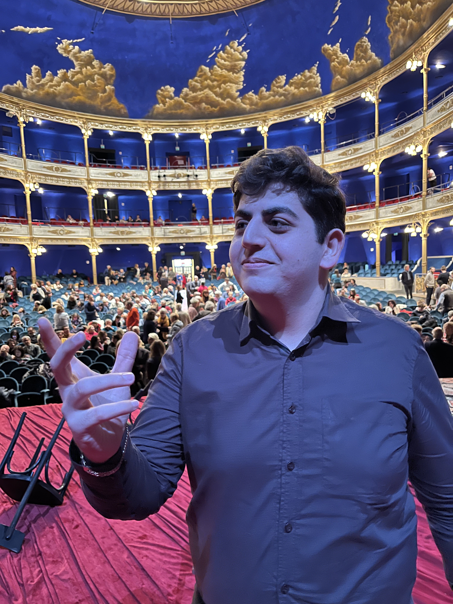

Qualcosa su di me
Sono Jivan, ci sono molti modi in cui potrei presentarmi, molte etichette che potrei usare, ma ce n’è una a cui torno più spesso di ogni altra: "Artista". Sono spinto dall'intuizione. Indago a 360 gradi, creo abbattendo ogni confine e do vita al pensiero ovunque mi spinga.

Dietro le quinte. Politeama Rosetti

Politeama Rossetti - Vista esterna (Clicca per aprire l'immagine originale)